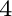

Next:
Open positions: Want to
Up:
Axel van de Walle's
Previous:
News
Software
The Alloy Theoretic Automatic Toolkit (ATAT)
An accelerated molecular dynamics code: Stochastic Iterations to Strengthen Yield of Path Hopping over Upper States (SISYPHUS)
A code for efficiently calculating melting points with ab initio methods: Solid Liquid in Ultra-Small Coexistence with Hovering Interface (SLUSCHI)
A code to efficiently model dynamically-stabilized strongly anharmonic phases: Piecewise Polynomial Potential Partitioning (P

)
avdw@alum.mit.edu Sun, Jun 1, 2025 5:26:05 PM